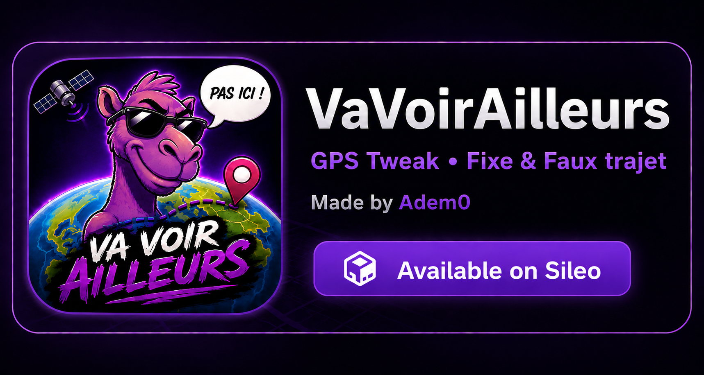

VaVoirAilleurs
GPS location tweak for jailbroken iPhones.
- Fixed GPS location
- Autonomous fake routes
- Rootless jailbreak compatible
- Requires Tweak Injection
Source URL: https://ademzero.github.io/vavoirailleurs/

GPS location tweak for jailbroken iPhones.
Source URL: https://ademzero.github.io/vavoirailleurs/